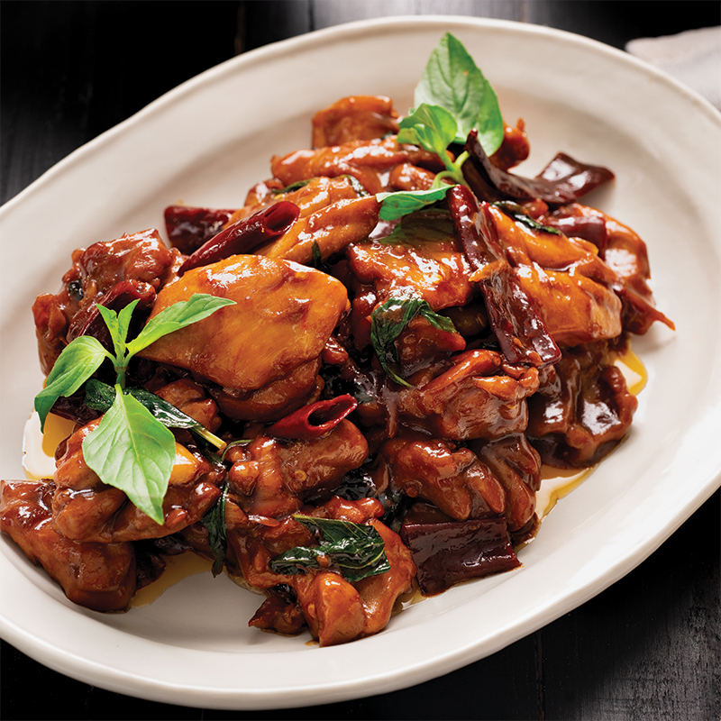

Dan Dan Noodles

Three Cup Chicken
A simple, unpretentious, and super flavorful Taiwanese dish thats so nostalgic for me. My dad
loved ordering this whenever we went out to eat because the recipe is so easy to replicate consistently.
One of the quickest dishes to make in a time pinch.
Ingredients
- 1 tbsp vegetable oil
- 1 tbsp sesame oil
- 2 inch piece ginger, thinly sliced
- 5 clove garlic, halved
- 8 oz chicken thigh, cut into chunks
- 1/4 cup soy sauce
- 1/4 cup rice wine
- 1/2 cup water
- 1 cup thai basil leaves whole
- 1 rep chili pepper, sliced
- 2 green onion stalks, cut into 2 inch piecesr
Steps
- Rub the chicken pieces with 1 tbsp baking soda to tenderize. Rinse after 10 mins and pat chicken dry.
- Add oil, ginger, garlic into pot and stir fry.
- Add chicken to pot along with soy sauce, rice wine, and water.
- Cover and simmer until chicken is cooked and tender.
- Add basil leaf and chili and stir until even.